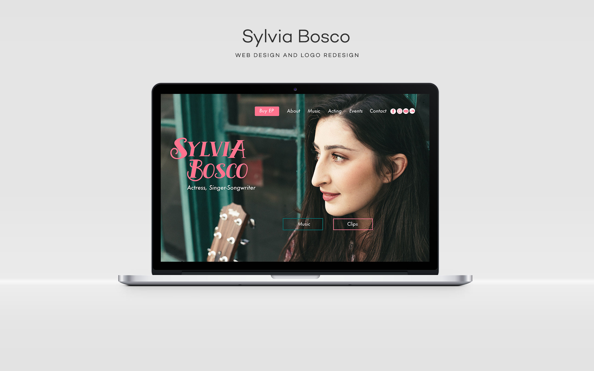
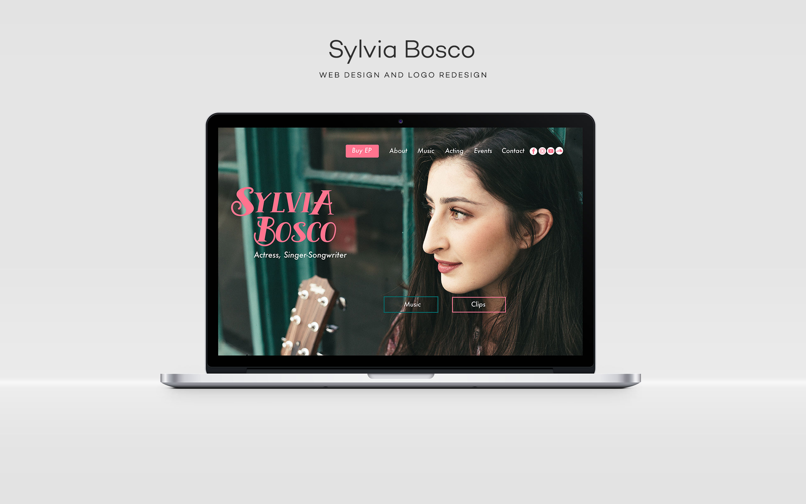

Contact Me:
Carmen Tan
323-828-4576
carmieletan@gmail.com
Work Experience
Financial Blockchain Operations Engineer — IBM (July 2018 -
Aug 2020)
— Led frontend development effort for IBM World Wire and participated in
frontend development for IBM Food Trust. Created production-grade
internationalized UI components in Angular 2+, unit test scaffolding,
Redux stores, and data visualizations in D3.js
— Maintained microservices written in Node/Go for the World Wire API. Built out
authentication middleware to faciliate secure communication between the
API and the admin/client UIs and enforce financial compliance policies
— Primary enterprise UX/UI designer for IBM World Wire. Devised the main
style guide for World Wire based on IBM Design Language and led the
major design upgrade for accessibility and international usability
— Contributed design patterns and developed new components for Carbon
Design, IBM’s open-source design system for products and experiences,
with support for multiple UI frameworks (React, Angular 2+, Vue, Vanilla JS)
— Acted as developer/design liason to improve communication between
product and development teams for both IBM World Wire and IBM Food
Trust. Collaborated with Market Development and Offering Managers to
gather business requirements, conduct user interviews, and design user
flows/use cases to be translated as technical requirements.
— Facilitated onboarding sessions for clients in various countries by
conducting demos and providing technical solution integrations
Software Engineer — MFour Mobile Research (May 2017 - June
2018)
— Built API endpoints, data models, MySQL queries to be consumed by
internal web applications and our “Surveys On The Go” mobile application
— Optimized the loading of consumer demographic data for research admin
tools, including a kanban-style filtering workflow for creating market re
search groups, by replacing traditional UI interfaces with React components
that interface with ElasticSearch and Redis for request caching
— Collaborated with Product and Marketing to wireframe and design UI
mockups and workflows for admin tools
— Maintained CRON jobs in Perl and Python for application and data cleanup
Web Developer — USC Laboratory of Neuroimaging (LONI) (May 2015 -
May 2017)
— Designed and implemented custom Wordpress themes and plugins for static sites, as well as
integrated third party APIs (Google Drive, Youtube, etc.)
— Built API endpoints in PHP and Golang for managing academic publication data and user profile data
across many different sites of the Institute
— Built cross-browser (IE9+) and responsive user interfaces in React or Bootstrap 3
— Created user-interactive visualizations for biomedical using D3.js, React, threeJS
— Utilized Docker and Vagrant to create containers for local development of each of our sites, and
easy packaging of dependencies for staging and production
— Mentored student developers/interns and led a small project team of 5 in technical design and main
feature development, database schema design, following proper development processes, and deployment in 2 major
launches (internal and public)
Student Web Developer — USC Trojan Events (Aug 2013 - May
2016)
— Created new controllers and data models for the main internal application based on CodeIgniter to
manage schedules and shifts, view shift data of employees
— Performed routine maintenance, including bugfixes and server configurations
— updated front-end components in Bootstrap and JQuery used by payroll coordinators and shift
managers to create budgetary allocations, schedule employees, and gather shift reports
Developer Intern — Songabout.FM (July 2014 - August 2014)
— Integrated 3rd party music data APIs for a custom lyric e-library application
— Developed functionality for multi-user interaction, library management, display and interaction
with song lyrics and media from youtube, soundcloud, etc.
Webmaster — USC Trojan Marching Band (August 2012 - Dec
2015)
— Designed graphical assets, created static responsive web pages, custom PHP forms for the main
marching band website
Freelance Web Designer/Developer (from September 2010)
— Built custom websites and web applications tailored to client needs, including: a small business
ecommerce site, internal social networking application for USC Cinema students, personal portfolio sites, etc.
Portfolio


 
